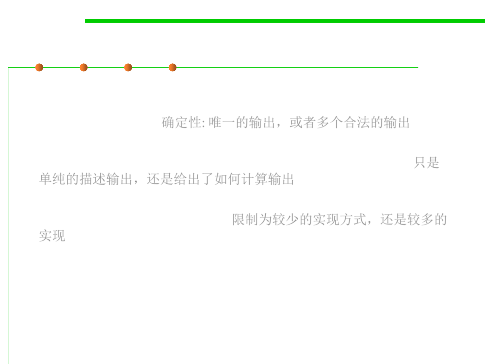

Comparing specifications
3.2 Designing Specification
▪ How deterministic it is. Does the spec defines only a single possible
output for a given input, or allow the implementer to choose from a
set of legal outputs? 确定性: 唯一的输出，或者多个合法的输出
▪ How declarative it is. Does the spec just characterize what the output
should be, or does it explicitly say how to compute the output? 只是
单纯的描述输出，还是给出了如何计算输出
▪ How ”strong” it is. Does the spec have a small set of legal
implementations, or a large set? 限制为较少的实现方式，还是较多的
实现
▪ “What makes some specifications better than others?”